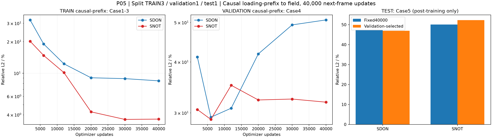
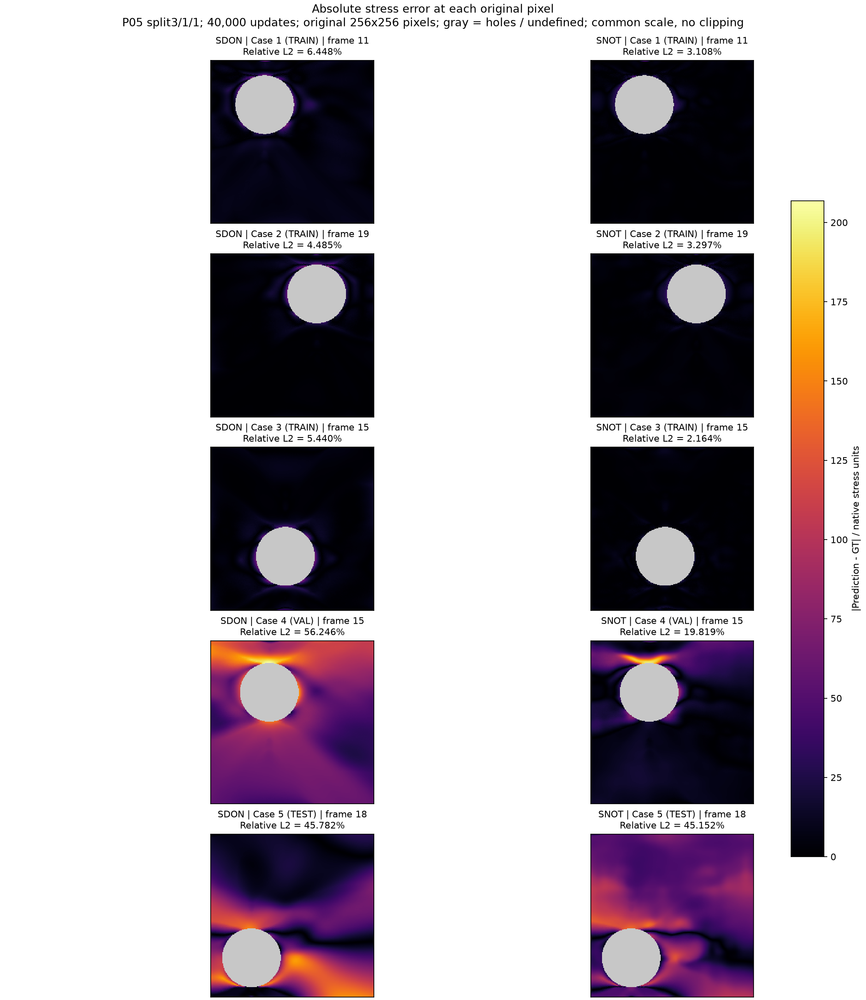
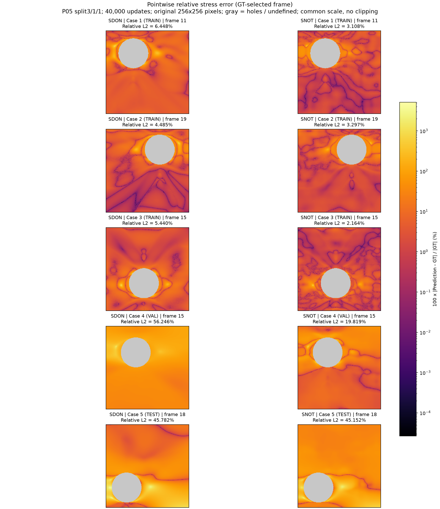
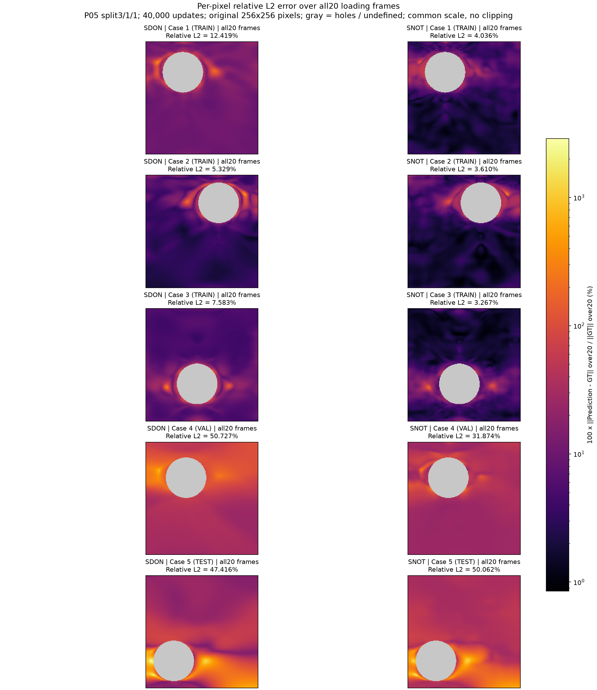
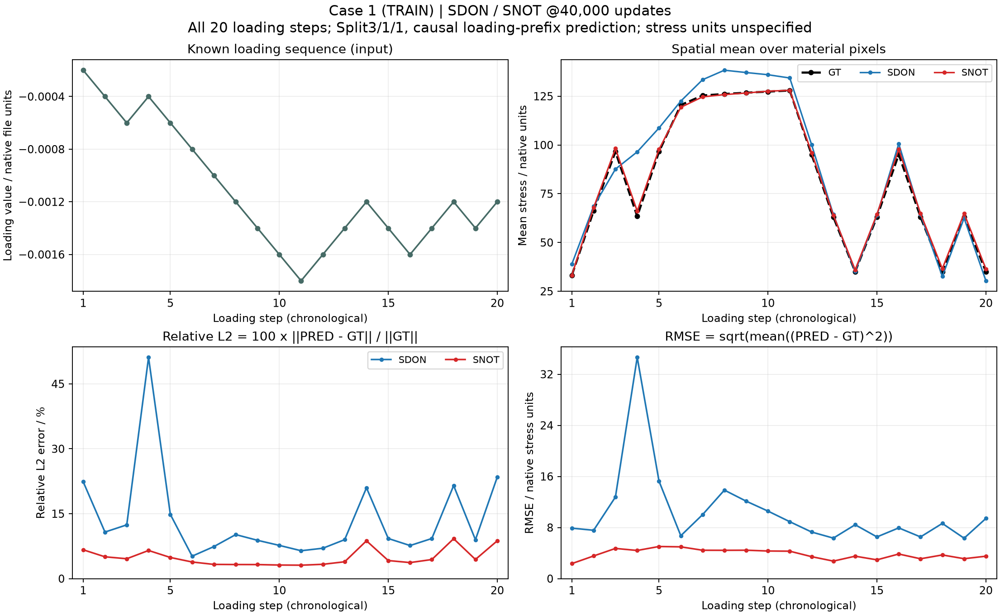
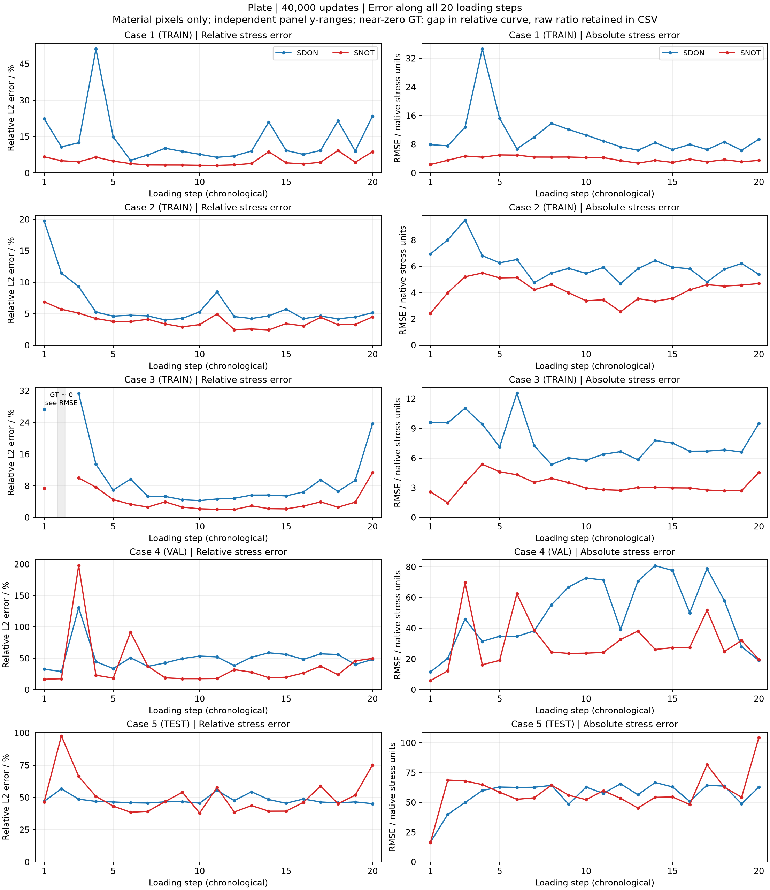

P05 / CAUSAL SEQUENTIAL OPERATORS
S-DeepONet 与 S-NOT · 加载历史到应力场
两模型从头各40000次更新Case1–3 TRAIN，Case4 validation，Case5 test。每次更新一个目标帧的全网格。输入仅包含截至该帧的载荷前缀、坐标和完整几何；训练及推理都不输入GT应力，也不反馈预测应力。初始无载荷、无应力为指定条件。
固定40000步 · 原始材料像素全部20帧 Relative L2 (%)
TRAIN为三例等权平均；点击任何表头可排序。只有1个validation和1个test，不能据此推断普遍泛化能力。
| 模型 | 参数量 | TRAIN mean (%) | Validation (%) | Test (%) |
|---|---|---|---|---|
| SDON | 893,141 | 8.4434 | 50.7271 | 47.4163 |
| SNOT | 1,005,377 | 3.6377 | 31.8739 | 50.0620 |

仅按Case4验证误差选优
固定2000/6000/12000/20000/30000/40000步选最低验证Relative L2，完整训练后冻结选择，再评估test。与固定40000结果分开。
| 模型 | Val-best update | Val-best validation (%) | Val-best test (%) |
|---|---|---|---|
| SDON | 6000 | 29.2731 | 46.9664 |
| SNOT | 6000 | 28.9114 | 52.2749 |
架构、适配与公平性
SDON：两层GRU编码载荷前缀末状态，结合几何特征生成系数；坐标与几何trunk生成空间基，内积输出应力。SNOT：GRU＋时间位置编码＋官方自注意力块；坐标位置编码与几何作为query，通过官方交叉注意力块读取载荷历史。
两者均额外加入读取完整256×256几何的CNN。SDON把官方固定长度解码器改为前缀末状态系数，SNOT按前缀调用以避免未来载荷泄漏；属于明确适配版本，不称官方原样复现。参数不同，FLOPs与耗时未配平。P04也是每步监督1帧，P03每步20帧，不能视为等监督量或单因素消融。
归一化仅用前三例：应力RMS 106.52667，load scale 0.0018。25帧只检查接口与因果性，只有原20帧有精度评估。官方来源
与已完成P04对照
| P04模型 | 参数量 | 固定40000 Test (%) |
|---|---|---|
| GNOT | 977681 | 29.8021 |
| TS3 | 970209 | 32.2597 |
| FNO | 1021046 | 2082.8402 |
| OFormer | 985906 | 50.0014 |
P04用上一帧应力与当前载荷递归推进；P05用完整已发生载荷前缀和几何直接预测目标帧，信息表示和主干均不同。
训练时间
GPU空闲准入等待 1.06 分钟；controller总墙钟 18.94 分钟。
| 模型 | 训练过程UTC / min | 最终评估与输出UTC / s | 模型阶段UTC / min |
|---|---|---|---|
| SDON | 5.854 | 1.827 | 5.884 |
| SNOT | 11.789 | 2.063 | 11.823 |
训练过程UTC取preflight落盘至最终loss落盘，含周期验证和checkpoint；最终评估输出另计。使用epoch wall，不采集CUDA事件计时。
逐Case · GT / Prediction / 相对误差 / 绝对误差
加载中…
Prediction
Pointwise relative error (%)
Absolute error
点击原始像素查看数值
原始256²像素，不插值或平滑；孔洞灰色，GT与预测共用色标。逐点相对误差=100×|PRED−GT|/|GT|，GT=0时未定义；绝对误差保留原单位。序列Relative L2=100×‖PRED−GT‖₂/‖GT‖₂。
误差图
error_absolute.png

error_relative.png

error_relative_all20.png

逐Case加载曲线


五例合并
近零GT帧的相对曲线留空，原比值与绝对RMSE保留于CSV。
